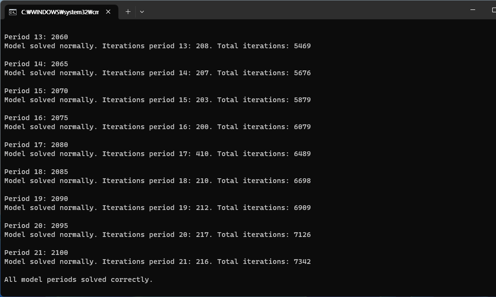
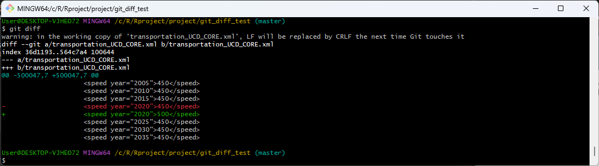

flowchart TD Electricity --> H2centralproduction Electricity --> H2wholesaledispensing Electricity --> H2industrial Wind --> H2centralproduction Solar --> H2centralproduction Coal --> H2centralproduction Nuclear --> H2centralproduction Gas --> H2centralproduction Gas --> H2wholesaledispensing H2centralproduction --> H2deliverytrack H2centralproduction --> H2pipeline H2deliverytrack --> H2wholesaledelivery H2deliverytrack --> H2wholesaledispensing H2pipeline --> H2wholesaledelivery H2pipeline --> H2wholesaledispensing H2wholesaledelivery --> H2rentaldelivery H2wholesaledelivery --> H2industrial H2rentaldelivery --> CommercialBuildings H2rentaldelivery --> ResidentialBuildings H2industrial --> AmmoniaProduction H2industrial --> IronandSteelProduction H2industrial --> IndustrialEnergyUse H2wholesaledispensing --> AgriculturalMachinery H2wholesaledispensing --> ConstruntionEquipment H2wholesaledispensing --> MiningEquipment H2wholesaledispensing --> H2rentaldispensing H2rentaldispensing --> HeavyDutyTrucks H2rentaldispensing --> LightDutyVehicles H2rentaldispensing --> AirTransport H2rentaldispensing --> RailTransport H2rentaldispensing --> ShipTransport
1 Core Model Proposal #359: Hydrogen and transportation technology update
1.1 Transportation
- Natural Gas Vehicles(NGV)
- Light-duty vehicles
- 지역별로 LDV의 사이즈를 4개씩 구분하였고, 각각의 배터리 용량(kwh poer vehicle) 제시
- BEV battery pack costs는 2020 BNEF EV Outlook에서 가져옴
- cost mark-up??
- Fuel cell stack costs는 NREL, 2020 Transportation Annual Technology Baseline에서 가져옴
2 transportation_UCD_CORE_CurPol_Korea_Dawoon
- region : South Korea
- supplysector :
- 항공 :
- aviation_intl
- 화물 :
- freight
- freight_road
- 여객 :
- pass_road
- pass_road_LDV
- pass_road_LDV_4W
- 해운 :
- shipping_intl
- 항공 :
- energy_final_demand
- 항공:
- aviation_intl
- 화물:
- freight
- 여객:
- pass
- 해운:
- shipping_intl
- 항공:
- supplysector :
- gcam-7의 transportation_UCD_CORE.xml과 비교해보니, supplysector, energy-final-demand의 구성 name은 동일함
- The most common failure to run GCAM when double clicking the run-gcam executable script typically relate to Java.
- model running 테스트 ->
All model periods solved correctly.
- Model run 결과는 exe - log - main_log.txt 에서 확인 가능
- output - queries
- ModelInterface - run-model-interface.bat
### transportation
3 2023-08-21 meeting with prof.Jeon
- GCAM7에는 trn_freight_road(트럭)에 hybrid 추가됨. Dawoon 파일에는 hybrid 없음
- Created new xml configuration by adding lines
Note
for <Configuration> <Value name = "transport">../input/gcamdata/xml/transportation_UCD_SSP1.xml</Value>
Important분석기간을 2100년이 아닌 2050년까지만 보고싶은데;;; 오류남.
for stop year <Value name="stop-year">2050</Value> -> DOESN’T WORK!!!
Saved as
configuration_transportation_SSP1.xmlfor backupAgain, saved it as
configuration.xlmcauserun-batct.catin exe folder takeconfiguration.xlm(not configuration_transporation_SSP1.xml) as input filerun model 
for checking model results, go to Modelinterface folder, and click
run-model-interface.batand File - Open -DB Open

- configuration.xml 파일에
vale name = solver밑에 새로운value name = transport추가
4 2023-08-22
4.1 git bash or tortoiseGit?
- Instead of using
tortoiseGit, I hope to usegit bash. Runningtortoise gittakes quite a long time when targeted.xmlfiles are heavy. For using, CLI(Command line interface) needs to be learned. But, steep learning curve :(
4.2 git diff
Show changes between commits, commit and working tree, etc
- Tried to use
git diffto see difference between versions in a file.moved
transportation_UCD_CORE.xmlinto a test foldermodified a
speedin 2020 from 450 to 500 for make a difference. and then saved it.

- Result. We can find a difference without add or commit. just typing
git diffgives the difference.

4.Modified speed in 2030, 2035 and typed git diff again. Same as 2.

- Commit
git commitand track my log usinggit log
- what’s next? reset? revert?
- DAC file
5 2023-08-29
- 수송분야 transport.configuration_transportation_dawoon.xml
6 Representation of H2 in GCAM
- Tried to make a flow chart of hydrogen in GCAM using
mermaid